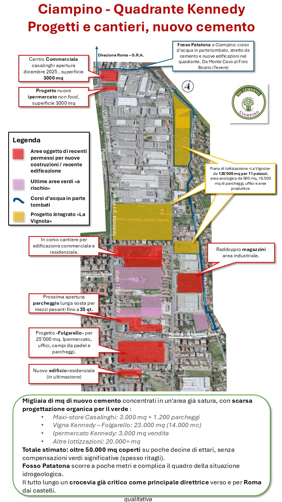
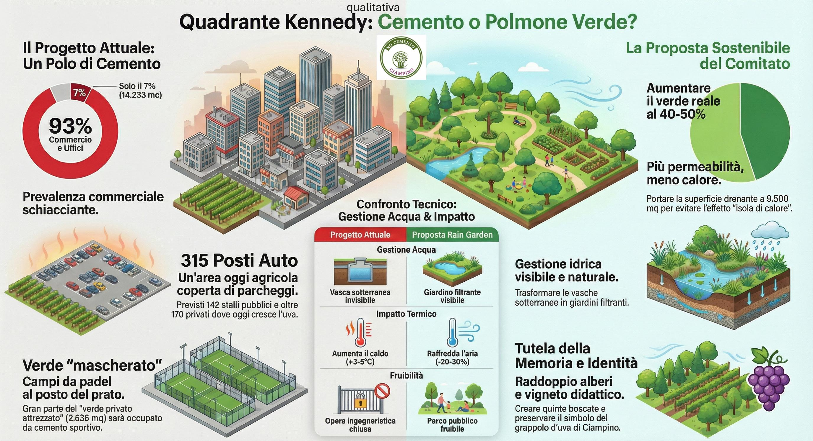

Il Rischio
La situazione e il progetto
Un intervento che di fatto trasforma uno degli ultimi "paesaggi agrari di continuità" in un complesso fortemente cementificato. Ecco la mappa della saturazione del quadrante Kennedy.

Clicca per guardare il video esplicativo su YouTube.

Principali nuove edificazioni e permessi nel quadrante Kennedy.
Cosa stiamo perdendo
L'area tra Viale Kennedy e Via Spada è oggi classificata come terreno agricolo con vigneti. Il progetto attuale, pur promettendo "verde", presenta a nostro avviso uno squilibrio tra legittimi interessi privati e prevalente interesse per servizi alla cittadinanza:
- Scarso Verde Pubblico: Dei 4.000 mq ceduti, ben 2.636 mq sono destinati a 4 campi da padel privati con spogliatoi.
- Rischio Idrogeologico: Le acque saranno gestite con vasche di laminazione interrate, temiamo insufficienti rispetto alle piogge torrenziali.
- Vincolo Archeologico: Scavi e cemento lambiscono la fascia di rispetto storico di Viale Kennedy.
- Calore: Solo 74 alberi previsti (1 ogni 200mq). Un forno a cielo aperto nella stagione estiva.
